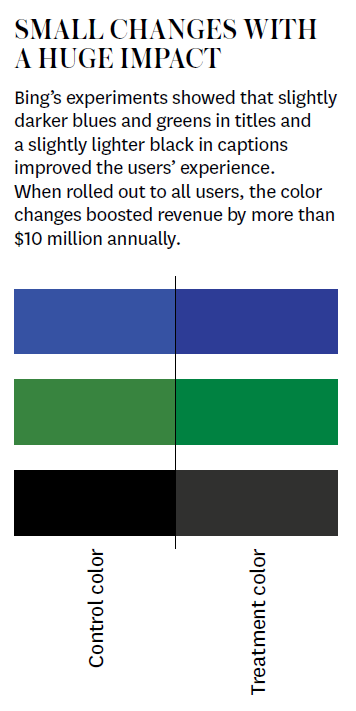

Experimentos
¿La estrategia/opción/bono logrará un aumento en los beneficios de la empresa?
Una relación espuria es un vínculo aparente entre dos eventos que se demuestra inválido cuando se examina la relación con mayor detalle.
Excepto cuando si la implica!
Incluso si no implica causalidad, la frase es inútil y termina la discusión
¡SI! La correlación es importante y se utiliza en la inferencia causal, solo que no de manera aislada
Una expresión más precisa sería: “La causalidad no puede inferirse solo a partir de la correlación”, o más generalmente, “La causalidad no puede inferirse solo a partir de estadísticas muestrales”
Matemáticas
Estadística
X causa Y si…
…intervenimos y cambiamos X sin cambiar nada más…
…y Y cambia
Encender fuegos artificiales causa ruido
El canto del gallo causa el amanecer
Obtener un MBA aumenta tus ingresos
Los resfriados desaparecen unos días después de tomar vitamina C
Imaginemos un grupo de alumnos para los cuales tenemos una medida de rendimiento académico \(Y_i\) para cada estudiante \(i\).
Además, sabemos si el estudiante fue asignado a un grupo de estudio especial (\(D_i=1\)) o a un grupo de estudio normal (\(D_i=0\))
A qué nos referimos cuando decimos esto causó aquello?
Cada estudiante \(i\) tiene dos resultados potenciales:
Sólo observamos \(Y_{1i}\) o \(Y_{0i}\). Nunca ambos!
\[Y_{1i} - Y_{0i}\]
Cada persona está en el grupo tratado (\(D_i=1\)) o en el grupo de control (\(D_i=0\)), pero no en ambos al mismo tiempo. Por lo tanto, para cada persona, solo podemos observar uno de sus posibles resultados. Lo que observamos (\(Y_i\)) es:
\[Y_i = \begin{cases} Y_{1i} & \text{if } D_i = 1 \\ Y_{0i} & \text{if } D_i = 0 \end{cases}\]
Los otros resultados (no observados) son los contrafactuales
Para los individuos en el grupo tratado, el contrafactual es: \((Y_{\color{red} 0 i}|D_i=1)\)
Para los individuos en el grupo de control, el contrafactual es: \((Y_{\color{red} 1 i}|D_i=0)\)
Nunca observaremos el efecto causal del tratamiento para el alumno \(i\):
\[Y_{1i} − Y_{0i}\]
| Persona | Y_1 | Y_0 | Diferencia |
|---|---|---|---|
| Juan | 130 | 115 | 15 |
| María | 120 | 125 | -5 |
| Sara | 100 | 125 | -25 |
| Carlos | 110 | 130 | -20 |
| Pedro | 115 | 120 | -5 |
| Media | 115 | 123 | -8 |
| Persona | Y_1 | Y_0 | Diferencia |
|---|---|---|---|
| Juan | 130 | ? | ? |
| María | 120 | ? | ? |
| Sara | ? | 125 | ? |
| Carlos | ? | 130 | ? |
| Pedro | 115 | ? | ? |
| Media | 121.66 | 127.5 | -5.83 |
| Persona | Y_1 | Y_0 | Diferencia |
|---|---|---|---|
| Juan | 130 | ? | ? |
| María | 120 | ? | ? |
| Sara | 100 | ? | ? |
| Carlos | ? | 130 | ? |
| Pedro | ? | 120 | ? |
| Media | 116.67 | 125 | -8.33 |
Modelo gráfico del proceso que genera los datos
Crea un mapa de su modelo filosófico
Nos ayuda a pensar qué controlar para aislar e identificar la causalidad
Los experimentos son una buena alternativa para crear contrafactuales (\((Y_{\color{red} 0 i}|D_i=1)\) y \((Y_{\color{red} 1 i}|D_i=0)\)) adecuados.
También nos permiten buscar datos que no están disponibles sobre el terreno.
Los experimentos (bien diseñados) proporcionan efectos causales
El primero paso es plantear la hipótesis que queremos testear.
Debemos especificar/definir la variable que analizaremos para saber si la hipótesis se cumple o no, y que dicha variable es la adecuada.
En ese sentido, los ejemplos anteriores necesitan todavía un poco de trabajo…
“La hidroxicloroquina es un medicamento efectivo contra el nuevo coronavirus”
“Organizar reuniones semanales de 1 hora de brainstorming para innovar en procesos de la empresa, hace sus procesos más eficientes.
Todo experimento debe tener un control y al menos, un tratamiento.
Grupo control es aquel que no se interviene o “no tratado” (\(D_i=0\)!)
Grupo(s) tratamiento son los que se intervienen/se les hace algún cambio. (\(D_i=1\)!)
Al momento de comparar control y tratamiento, eliminamos (“controlamos”) cualquier otro factor que pudiese haber influído en nuestra variable de interés y que no se deba a la intervención / cambio.
Estos otros factores deberían influenciar a grupos control y tratamiento por igual.
Es decir, el control nos permite determinar si la intervención verdaderamente CAUSÓ un cambio/efecto en la variable de interés.
Supongamos que tenemos 1 control y n tratamientos (donde n puede ser 1,2,…)
Control y tratamientos serían (normalmente) de tamaño 1/(n+1) por las personas a estudiar.
Ejemplo:
1000 personas en mi organización que participan en el experimento (ya sea como control, tratamiento 1 o tratamiento 2).
Entonces 1/3 de las 1000 personas (333) entrarían al control, 1/3 (333) al tratamiento 1 y 1/3 (334) al tratamiento 2.
üî¨ Contexto
Una universidad quiere evaluar el efecto de diferentes métodos de enseñanza sobre el rendimiento de sus estudiantes y profesores asistentes. Se asignan aleatoriamente a los participantes a uno de tres grupos:
Control: siguen el método tradicional (clases magistrales).
Tratamiento 1: usan clases interactivas con tecnología.
Tratamiento 2: combinan clases interactivas con tutorías personalizadas.
üéØ Resultado
# Establecer la semilla para poder replicar
set.seed(123)
# Número de personas
n <- 1000
# Creemos unos datos con 1000 personas
data <- data.frame(
id = 1:n,
tipo = sample(c("Profesores", "Estudiantes"), size = n, replace = TRUE, prob = c(0.2, 0.8))
)
# Veamos cómo quedan distribuidos nuestros datos
aggregate(id ~ tipo, data = data, FUN = length) tipo id
1 Estudiantes 802
2 Profesores 198# Asignemos aleatoriamente a la gente a un grupo (control, tratamiento 1, tratamiento 2)
data <- data |>
mutate(
grupo = sample(c("Control", "Tratamiento 1", "Tratamiento 2"), size = n, replace = TRUE)
)
# Veamos cómo quedan distribuidos nuestros datos
aggregate(id ~ grupo, data = data, FUN = length) grupo id
1 Control 325
2 Tratamiento 1 331
3 Tratamiento 2 344 grupo tipo id
1 Control Estudiantes 267
2 Tratamiento 1 Estudiantes 265
3 Tratamiento 2 Estudiantes 270
4 Control Profesores 58
5 Tratamiento 1 Profesores 66
6 Tratamiento 2 Profesores 74Es fundamental, para asegurarnos que cualquier diferencia entre control y tratamiento (en la variable de interés) se deba a nuestra intervención que la asignación sea aleatoria.
La asignación aleateoria balancea las características (covariables) entre control y tratamiento
De lo contrario, si observo una diferencia entre ambos grupos, esto se podría deber a…
En otras palabras, ¿cómo determinamos que hay un efecto de mi intervención en la variable de interés?
Cuando queremos saber si dos grupos son distintos en cuanto a alguna variable, hacemos…
PRUEBA DE HIPOTESIS DE MEDIAS POBLACIONALES
Si p-value es menor al límite de riesgo (1%, 5% o 10%), entonces puedo decir que ambos grupos son distintos en cuanto a esa variable.
Puedo hacer varias comparaciones, si hay mas de 1 tratamiento, pero siempre entre 2 grupos: control vs tratamiento 1, control vs tratamiento 2, tratamiento 1 vs tratamiento 2, etc…
Los experimentos nos permiten establecer causalidad.
Implemento acción, estrategia, intervención y observo que las personas/divisiones/municipios… se comportan de manera distinta a las del control cuando se les aplica la intervención (importancia del control para establecer causalidad).
Entonces la intervención está causando el cambio en comportamiento. No es una simple correlación.
Imagina un experimento realista en el área de negocios, educación o salud. Describe brevemente:
Escríbele a ChatGPT la siguiente instrucción:
“Escribe código en R para simular un experimento con 100 personas con las características que definimos en el punto anterior.”
“¿Cómo puedo graficar las medias de las covariables por grupo con intervalos de confianza en ggplot2?”
“¿Cómo puedo estimar el efecto del tratamiento sobre el resultado, con y sin controlar por covariables?”
La incertidumbre es parte inherente del proceso emprendedor.
Los emprendedores deben tomar muchas decisiones, a menudo con resultados arriesgados o desconocidos.
Tienen que elegir a qué clientes servir, qué características incluir en el producto y a través de qué canales vender.
¿Cuál marco estratégico es el adecuado?
“[El iPhone es] el teléfono más caro del mundo, y no atrae a los clientes empresariales porque no tiene teclado, lo que hace que no sea una buena máquina de correo electrónico.”
Steve Ballmer, consejero delegado de Microsoft (2007)
“La gente nos ha dicho una y otra vez que no quiere alquilar su música… no quiere suscripciones.”
Steve Jobs, consejero delegado de Apple (2003)
La idea es que, al igual que en una fábrica, la variabilidad y la incertidumbre son indeseables y deben eliminarse.
Aquí radica el dilema: por definición, la novedad crea incertidumbre porque no sabemos qué funcionará y qué no. Dicho de otro modo la incertidumbre es necesaria porque crea oportunidades.
La experimentación se presenta como un proceso de tres partes:
Los emprendedores generan ideas para introducir variación en el número y la naturaleza de las opciones estratégicas.
Evalúan la viabilidad de las opciones seleccionadas
Deben tomar decisiones basadas en los resultados de las pruebas.

Desarrollar una hipótesis
Diseñar el experimento (A/B por ejemplo)
Ejecutar el experimento
Analizar los resultados
Un marco de experimentación inclina a los emprendedores hacia el aprendizaje y la adaptación, evitando compromisos prematuros o costosos.
¿La hipótesis se basa en observaciones, ideas o datos?
¿Se centra el experimento en una medida de gestión comprobable?
¿Tiene variables medibles y puede demostrarse su falsedad?
¿Qué se espera aprender del experimento?
¿Qué cambios concretos se introducirían en función de los resultados?
¿Cómo garantizará la organización que no se ignoren los resultados?
¿Cómo encaja el experimento en el programa general de aprendizaje y las prioridades estratégicas de la organización?
¿Tiene el experimento una predicción comprobable?
¿Cuál es el tamaño de muestra necesario? Nota: El tamaño de la muestra dependerá del efecto esperado (por ejemplo, un aumento del 5% en las ventas).
¿Puede la organización llevar a cabo el experimento en los lugares de prueba durante el tiempo necesario?